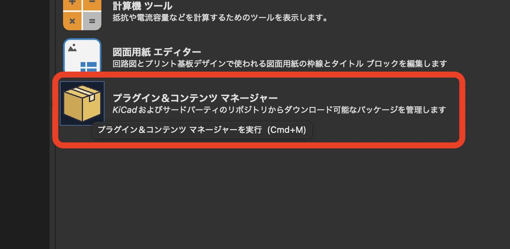
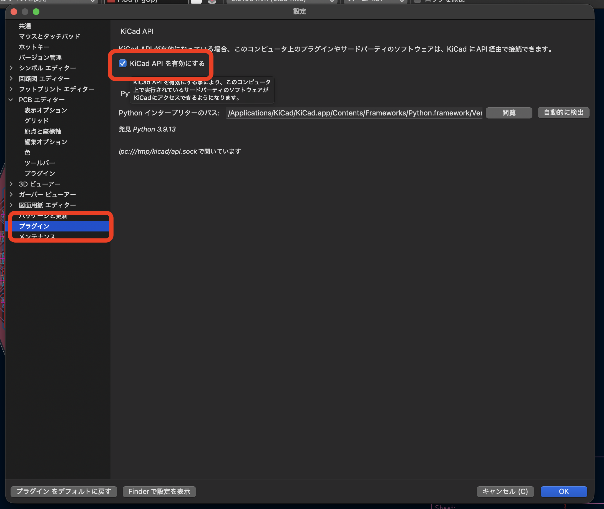
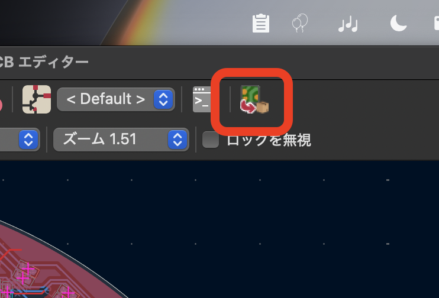
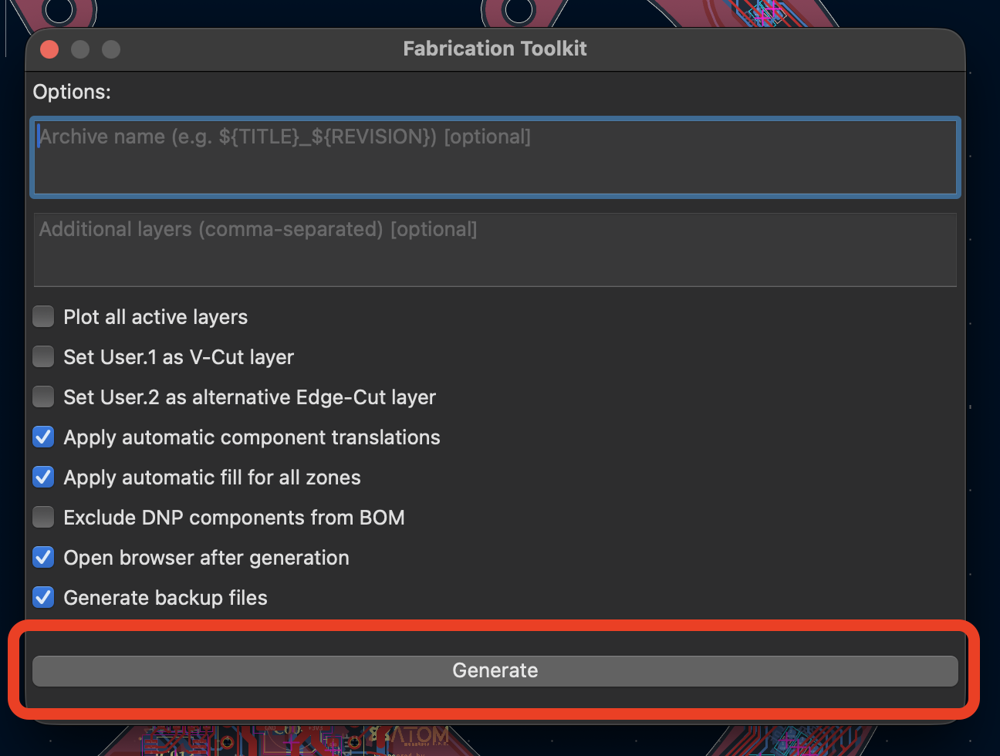

JLCPCB 発注方法-with KiCad
JLCPCB で基板を発注する際の手順について説明します。世界的PCB EditorであるKiCadを使用するとより簡単に発注することができます。
1-プラグインのインストール
KiCadには、JLCPCBへの発注専用プラグインが用意されています。これを使用することで非常に簡単に発注ができます。
↓プラグイン&コンテンツマネージャーを開く
↓JLCと検索 ▶︎ JLCPCBファブリケーケーションツールキットをインストール
このプラグインは、「Benny Megidish」氏が開発したもので、GitHub上で公開されています。手動でのダウンロードもできます。下のリンクからGitHubリポジトリを閲覧できます。
GitHub.com2-Generate Zip
インストール完了したら、PCBエディターを開きます。エディタを開く前にKiCad自体を再起動すると確実です。
↓上のバーに発注用のアイコンが出てくるのでクリックします。(トグルです。)アイコンが表示されない人へ。(for KiCad10.xx user)
私は、はじめプラグインアイコンが表示されませんでした。ChatGPTの協力のもと解決しましたので一つの原因として共有します。
KiCad10.xxバージョンでは外部プラグインを使用する場合、APIを有効にする必要があるようです。[設定→プラグイン→APIを有効にする にチェック]すると、有効になります。

しかし私は、それだけでは動きませんでした。そのあとKiCadを終了し、ターミナルから起動することでプラグインが表示されました。もし表示されない人はやってみてください。 これらの分野において、AIはかなりいい仕事をしてくれます。聞いてみるのもありかもですね。

↓色々表示されるけど、そのままでいいので、Genelateを押す。
すると、該当プロジェクトフォルダ内に、production_files というフォルダが作成されます。
3-発注！！
JLCPCBの見積もりページを開き、 ↓Add garber fileを押して、プラグインで生成したzipを開く
すると、JLCPCBの見積もりページに自動でPCBデータがインポートされます。あとは、数量やオプションを選択して、見積もりを確認し、発注することができます。
以上！！
なんと簡単なことでしょう。このプラグインは現在の私の使用バージョンKiCad10.08までの対応は保証できます。
ぜひKiCadとプラグインを使ってより良い開発をしましょう！！
written by Munako ATOM RCJ Infrared Team